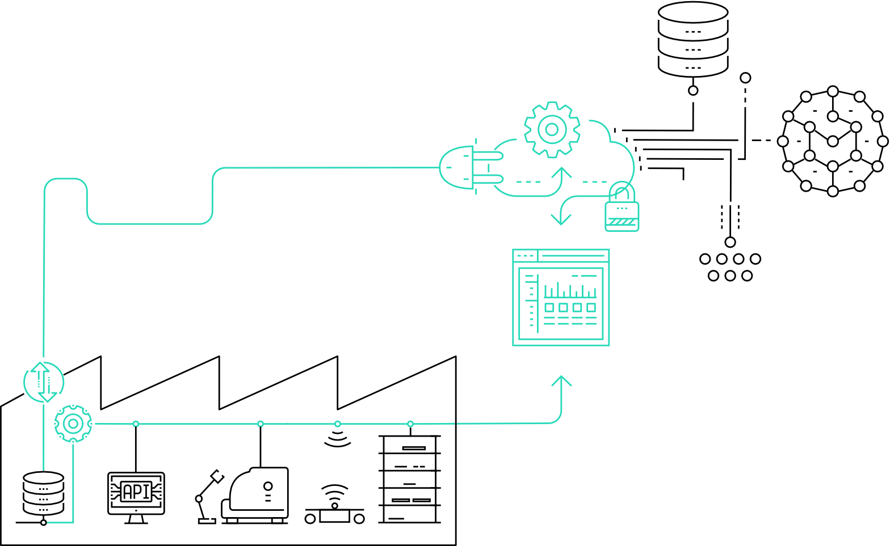

Woensdag 22 oktober 2025
SUPPLYDRIVE – Slim Ondernemen
Bedrijfsbezoek + business innovatie
Korte samenvatting
SUPPLYDRIVE liet zien hoe ze slimme technologieën inzetten voor supply chain optimalisatie. Denk aan real-time tracking en voorraadbeheer met AI. Vooral de combinatie van hardware (sensors) en software (dashboards) viel op.
Gebruik tijdens mijn eigen studie (buiten de minor)
Nog niet gebruikt.
Bruikbaar voor verdere carrière
Relevante kennis voor supply chain management – vooral in een logistieke of productieomgeving.